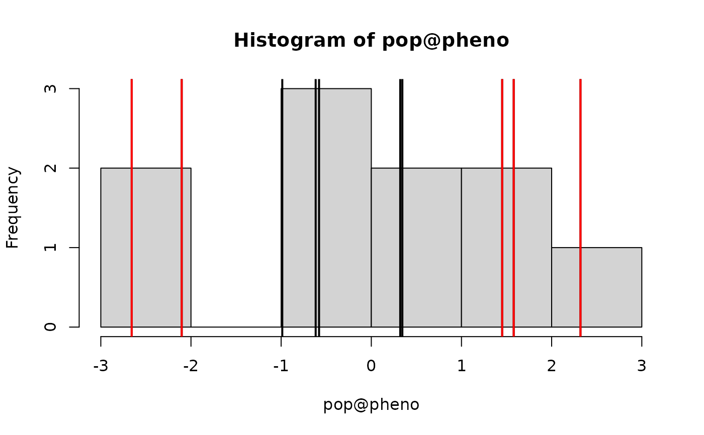
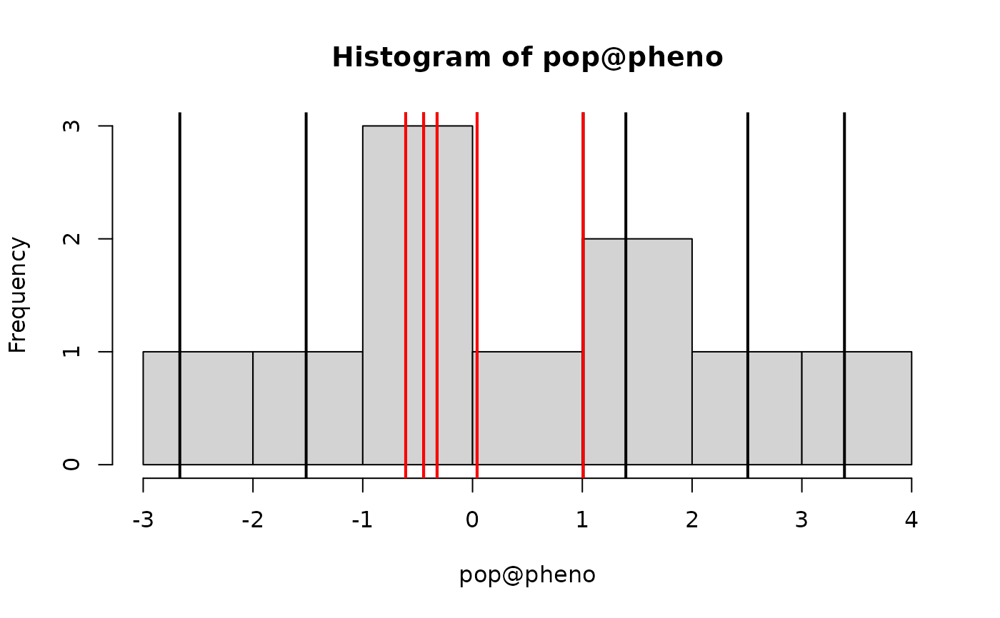
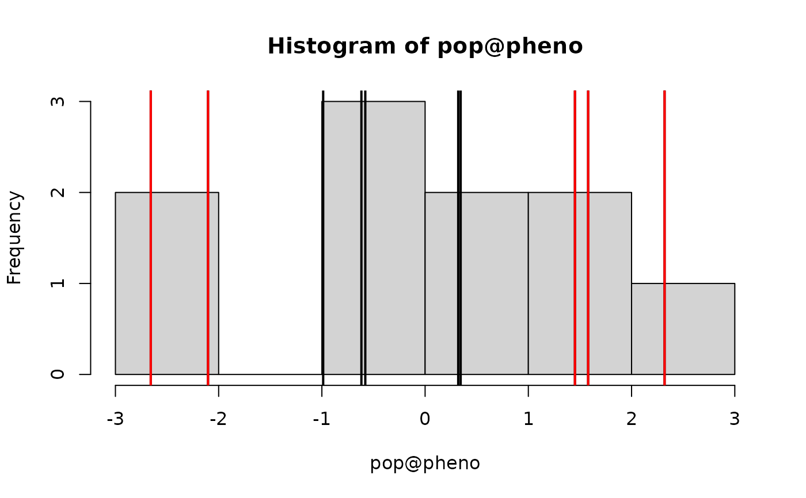
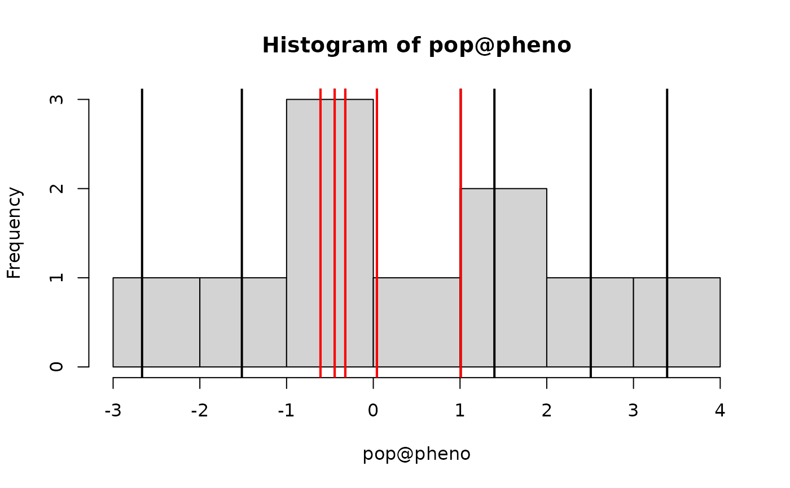

Selects a subset of nInd individuals from a population.
Usage
selectInd(
pop,
nInd,
trait = 1,
use = "pheno",
sex = "B",
selectTop = TRUE,
returnPop = TRUE,
candidates = NULL,
simParam = NULL,
...
)Arguments
- pop
and object of
Pop-class,HybridPop-classorMultiPop-class- nInd
the number of individuals to select
- trait
the trait for selection. Either a number indicating a single trait or a function returning a vector of length nInd. The function must work on a vector or matrix of
usevalues astrait(pop@use, ...)- depending on whatuseis. See the examples andselIndex.- use
the selection criterion. Either a character (genetic values "gv", estimated breeding values "ebv", breeding values "bv", phenotypes "pheno", or randomly "rand") or a function returning a vector of length nInd. The function must work on
popasuse(pop, trait, ...)or astrait(pop@use, ...)depending on whattraitis. See the examples.- sex
which sex to select. Use "B" for both, "F" for females and "M" for males. If the simulation is not using sexes, the argument is ignored.
- selectTop
selects highest values if true. Selects lowest values if false.
- returnPop
should results be returned as a
Pop-class. If FALSE, only the index of selected individuals is returned.- candidates
an optional vector of eligible selection candidates.
- simParam
an object of
SimParam- ...
additional arguments if using a function for
traitoruse
Value
Returns an object of Pop-class,
HybridPop-class or MultiPop-class
Examples
#Create founder haplotypes
founderPop = quickHaplo(nInd=10, nChr=1, segSites=10)
#Set simulation parameters
SP = SimParam$new(founderPop)
SP$addTraitA(10)
SP$setVarE(h2=0.5)
#Create population
pop = newPop(founderPop, simParam=SP)
#Select top 5 (directional selection)
pop2 = selectInd(pop, 5, simParam=SP)
hist(pop@pheno); abline(v=pop@pheno, lwd=2)
abline(v=pop2@pheno, col="red", lwd=2)
 #Select 5 most deviating from an optima (disruptive selection)
squaredDeviation = function(x, optima=0) (x - optima)^2
pop3 = selectInd(pop, 5, trait=squaredDeviation, selectTop=TRUE, simParam=SP)
hist(pop@pheno); abline(v=pop@pheno, lwd=2)
abline(v=pop3@pheno, col="red", lwd=2)

#Select 5 least deviating from an optima (stabilising selection)
pop4 = selectInd(pop, 5, trait=squaredDeviation, selectTop=FALSE, simParam=SP)
hist(pop@pheno); abline(v=pop@pheno, lwd=2)
abline(v=pop4@pheno, col="red", lwd=2)

#Select 5 individuals based on miscelaneous information with use function
pop@misc = list(smth=rnorm(10), smth2=rnorm(10))
useFunc = function(pop, trait=NULL) pop@misc$smth + pop@misc$smth2
pop5 = selectInd(pop, 5, use=useFunc, simParam=SP)
pop5@id
#> [1] "1" "6" "3" "8" "2"
#... equivalent result with the use & trait function
useFunc2 = function(pop, trait=NULL) cbind(pop@misc$smth, pop@misc$smth2)
trtFunc = function(x) rowSums(x)
pop6 = selectInd(pop, 5, trait=trtFunc, use=useFunc2, simParam=SP)
pop6@id
#> [1] "1" "6" "3" "8" "2"
#Select 5 most deviating from an optima (disruptive selection)
squaredDeviation = function(x, optima=0) (x - optima)^2
pop3 = selectInd(pop, 5, trait=squaredDeviation, selectTop=TRUE, simParam=SP)
hist(pop@pheno); abline(v=pop@pheno, lwd=2)
abline(v=pop3@pheno, col="red", lwd=2)

#Select 5 least deviating from an optima (stabilising selection)
pop4 = selectInd(pop, 5, trait=squaredDeviation, selectTop=FALSE, simParam=SP)
hist(pop@pheno); abline(v=pop@pheno, lwd=2)
abline(v=pop4@pheno, col="red", lwd=2)

#Select 5 individuals based on miscelaneous information with use function
pop@misc = list(smth=rnorm(10), smth2=rnorm(10))
useFunc = function(pop, trait=NULL) pop@misc$smth + pop@misc$smth2
pop5 = selectInd(pop, 5, use=useFunc, simParam=SP)
pop5@id
#> [1] "1" "6" "3" "8" "2"
#... equivalent result with the use & trait function
useFunc2 = function(pop, trait=NULL) cbind(pop@misc$smth, pop@misc$smth2)
trtFunc = function(x) rowSums(x)
pop6 = selectInd(pop, 5, trait=trtFunc, use=useFunc2, simParam=SP)
pop6@id
#> [1] "1" "6" "3" "8" "2"